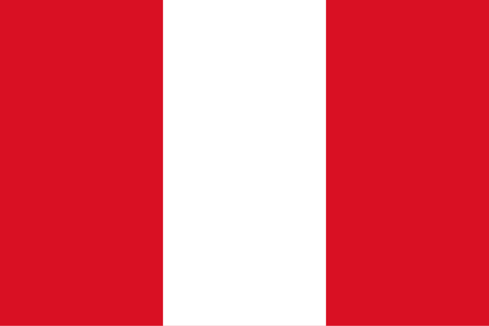

Peru
 O Peru, oficialmente República do Peru, é um país localizado na América do Sul, limitado a norte pelo Equador e Colômbia, a leste pelo Brasil e Bolívia, a sul pelo Chile e a oeste pelo Oceano Pacífico. Com aproximadamente 1,28 milhões de km², é conhecido por sua geografia extremamente diversa, que vai desde a costa desértica até as altas montanhas dos Andes e a densa floresta amazônica. A capital é Lima, situada na costa central do país, funcionando como centro político, econômico e cultural. O Peru possui uma população de cerca de 33 milhões de habitantes, formada por uma mistura de descendentes indígenas, europeus, africanos e asiáticos, refletindo a rica diversidade étnica e cultural do país. O Peru se destaca pela sua herança histórica, econômica e cultural, sendo berço de grandes civilizações pré-colombianas, como os Incas, e por possuir recursos naturais estratégicos, incluindo minerais, petróleo e biodiversidade amazônica.
História
A história do Peru é marcada pela presença de civilizações antigas que moldaram sua identidade cultural. Entre 3000 a.C. e 2000 d.C., culturas como a Chavín, Moche, Nazca e Wari desenvolveram complexas sociedades com grandes avanços em agricultura, engenharia e arte. O Império Inca, surgido no século XIII, tornou-se o maior e mais organizado império da América pré-colombiana, com um sofisticado sistema de estradas, administração centralizada e técnicas agrícolas avançadas, como os terraços de cultivo. A capital Inca, Cusco, funcionava como centro político, religioso e cultural, e o Império estendia-se por grande parte do território andino.
No século XVI, o Peru foi conquistado pelos espanhóis liderados por Francisco Pizarro, transformando o território em parte do Vice-Reino do Peru, que se tornou um dos centros mais importantes da colonização espanhola na América do Sul. A colonização trouxe mudanças profundas na sociedade, economia e religião, com exploração de minas de prata em Potosí e imposição do cristianismo. Em 1821, o Peru proclamou sua independência, consolidada em 1824 após batalhas decisivas como a de Ayacucho. Desde então, o país passou por períodos de estabilidade e crise política, reformas econômicas e movimentos sociais, mantendo uma rica herança cultural indígena mesclada à influência europeia.
Cultura
A cultura peruana é uma fusão complexa de tradições indígenas, espanholas, africanas e asiáticas, refletindo séculos de interação cultural. A língua oficial é o espanhol, mas línguas indígenas como o quéchua e aimará são reconhecidas oficialmente e faladas em diversas regiões. A gastronomia peruana é famosa mundialmente, com pratos tradicionais como ceviche, lomo saltado, ají de gallina e causa, combinando ingredientes nativos e técnicas culinárias trazidas pelos colonizadores. Festividades como Inti Raymi, Carnaval e o Senhor de los Milagros celebram tradições religiosas, culturais e agrícolas, fortalecendo a identidade local e promovendo a união comunitária.
As artes visuais e literárias também são marcantes, com expressões que vão desde cerâmicas pré-colombianas até obras contemporâneas de artistas e escritores que exploram temas como identidade, história e desafios sociais. A música e dança incluem estilos tradicionais andinos, amazônicos e afro-peruanos, como a marinera, o huayno e a música criolla. A arquitetura peruana combina vestígios incas, coloniais espanhóis e construções modernas, sendo pontos turísticos importantes cidades como Cusco, Lima e Arequipa. Essa diversidade cultural faz do Peru um país de grande riqueza simbólica e histórica.


Clima
O clima do Peru é extremamente variado devido à sua geografia diversa, incluindo a costa desértica, a cordilheira dos Andes e a floresta amazônica. Na costa, o clima é desértico e árido, com temperaturas moderadas pelo efeito do Pacífico e chuvas escassas. Nos Andes, o clima é montanhoso, com invernos rigorosos e verões amenos, enquanto na Amazônia o clima é tropical úmido, quente e chuvoso durante grande parte do ano. Essa diversidade climática influencia diretamente a agricultura, a biodiversidade e os modos de vida das populações locais, além de determinar os ecossistemas e atividades econômicas predominantes em cada região.
Biodiversidade
O Peru possui uma das biodiversidades mais ricas do planeta, abrangendo áreas costeiras, montanhosas e florestas tropicais. Na costa, predominam espécies adaptadas ao clima árido, enquanto nos Andes há fauna e flora resistentes a altitudes elevadas, incluindo camelídeos como lhamas e vicunhas. Na Amazônia peruana, encontram-se espécies como onças, macacos, aves exóticas, além de uma flora exuberante composta por árvores altas, plantas medicinais e espécies endêmicas. A diversidade ecológica faz do Peru um destino importante para pesquisa científica e turismo ecológico.
O país possui diversas áreas protegidas, incluindo reservas e parques nacionais, como o Parque Nacional del Manu e o Parque Nacional Huascarán, que preservam ecossistemas frágeis e espécies ameaçadas. No entanto, pressões como desmatamento, mineração, urbanização e mudanças climáticas ameaçam a biodiversidade, exigindo políticas de conservação e desenvolvimento sustentável para garantir o equilíbrio ambiental e a proteção dos recursos naturais.


Cidades
As cidades do Peru refletem a diversidade histórica e geográfica do país, combinando centros urbanos modernos com áreas tradicionais e históricas. Lima, a capital, é o maior centro urbano e concentra a administração, economia, educação e cultura, possuindo infraestrutura avançada e importantes portos comerciais. Outras cidades importantes incluem Cusco, antiga capital do Império Inca, Arequipa, Trujillo e Iquitos, cada uma com características próprias ligadas à história, economia local e meio ambiente. As cidades peruanas desempenham papel central na vida social e econômica, conectando regiões rurais e urbanas e mantendo vivas as tradições culturais.
Além de sua função administrativa e econômica, essas cidades são polos turísticos de grande relevância, atraindo visitantes para sítios arqueológicos, festivais culturais, paisagens naturais e patrimônio histórico. A arquitetura urbana combina elementos coloniais espanhóis, construções modernas e vestígios pré-colombianos, criando um cenário único que reflete a história complexa e multifacetada do Peru, sua diversidade cultural e importância geográfica na América do Sul.